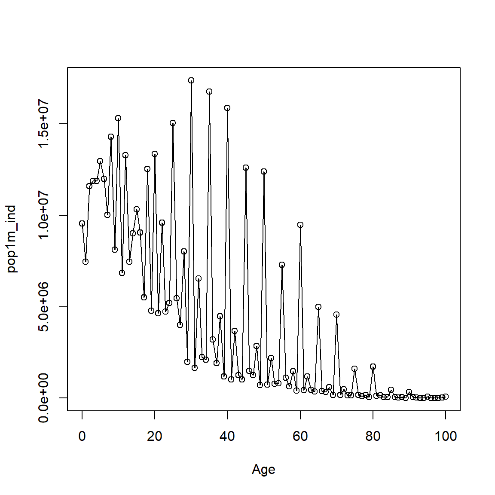

Age-heaping_quality_with_Demotools.RmdDemoTools to get age-heaping indicesThe observed age distribution of a population can be affected by various kinds of reporting errors: 1) misstatements of age, 2) incomplete enumeration at particular ages, and 3) failure to report ages (United Nations 1952). These errors can have different sources. For example, ages of older women are often understated (United Nations 1952). Men, on the other hand, may misrepresent their age to avoid taxation or military services in some populations (United Nations 1952). In addition to these reasons, some errors are induced by how the census takes place. For instance, in many countries the census is taken by leaving the questionnaire to be filled by a family member who might have to report other family members’ age, in other countries the census information is collected by enumerators in interviews in which case the quality of declared ages depends on who is answering the interview, among other reasons (United Nations 1952). In this vignette we focus on indices to measure the quality of data affected by age misstatement.
Consider the 1991 male census population of India.
library(DemoTools)
# 'pop1m_ind' available as package data
Age <- 0:(length(pop1m_ind)-1)
plot(Age, pop1m_ind, type = 'o') 
The figure above has some clear age irregularities. For example, there is a consistent clustering around ages ending in zero and five. In principle, a post-enumeration survey or a sample interview should give more information on the reasons why these irregularities appear in the data (Siegel Jacob and Swanson David 2004). However, not every country has the resources to conduct a survey or post-enumeration process. Therefore, various arithmetic techniques have been developed for measuring heaping on individual ages, terminal digits, and age ranges. These estimate the degree of bias, but they do not correct it (Booth and Gerland 2015). The simplest way to analyze age-heaping is by assuming that the true numbers are rectangularly distributed over some age range that includes centered the age in question (Siegel Jacob and Swanson David 2004).
Several indices of age-heaping exist. DemoTools implements Whipple (Spoorenberg and Dutreuilh 2007), Myers, Bachi (Bachi 1951), Coale-Li (Coale and Li 1991), Noumbissi (Noumbissi 1992), Spoorenberg (Spoorenberg and Dutreuilh 2007), Jdanov (Jdanov 2008), and Kannisto (Kannisto 1999) age-heaping indices. Although the literal interpretation of these indices may vary, they tend to covary strongly when applied to the same data and age-ranges, so for making quick judgements of the degree of heaping over a large collection of data it may not be necessary to apply more than one or two. We also offer two new measures designed to test for irregularities in data in 5-year age bins.
Often the degree of detected heaping suggests that some smoothing procedure is warranted, but the kind of smoothing procedure may be a function of the particular way in which heaping is manifested. For example, if heaping is light, or just a matter of rounding to the nearest digit divisible by 5, then there will be no major difference between heaping on 0s versus heaping on 5s. In this case, grouping to 5-year age bins (see groupAges()) and then graduating in a constrained way (see sprague()) may suffice to remove the distortion while maintaining the broad underlying age pattern. However, if heaping is much worse on 0s than on 5s, the age pattern may still be distorted in a regular and pernicious way even after binning in 5-year age groups. In that case, it is advised to select a smoothing procedure designed for 5-year age groups (see agesmth() and the vignette on smoothing) before graduating, or else some other more agressive smoothing option (see agesmth1()). The present vignette does not offer specific guidelines for such adjustments, but we do offer two new age quality indices that might be useful for deciding whether to resort to agressive smoothing: zero_pref_sawtooth() checks for and rates the mentioned jagged pattern in 5-year age groups. five_year_roughness() gives a total measure of noise for data in 5-year age groups, but does not look for a particular pattern to it. This second measure should not be used in isolation, but together with visual assessment. More details about such adjustments and decisions can be found in a second vignette on smoothing.
Using this assumption over a 5-year range, Whipple’s index measures heaping usually in numbers ending in zero or five. This index is a summary measure that determines variability in the quality of age reporting between regions or countries and its evolution over time. Usually this index is calculated for digits 0 and 5 in adult ages 25 to 60. The uniformity assumption is less useful outside of this range. The original formula is given by
\[\begin{equation} \label{eq:Whipple} W=5\frac{P_{25}+P_{30}+P_{35}+\dots+P_{60}}{P_{23}+P_{24}+\dots+P_{61}+P_{62}}, \end{equation}\]
where \(P_x\) is the population of age \(x\) in completed years (Spoorenberg and Dutreuilh 2007).
For example, the Whipple’s index using DemoTools between ages 25 and 60 for country x is given by
The result varies from 1, which means no concentration around numbers ending in zero or five, to a maximum of 5 (or 10 if only a single digit is tested). The selection of calculating the index for ages 25-60 is arbitrary but it has been found to be suitable for practical purposes (United Nations 1955). Whipple’s index is effective and very easy to compute. It can also be used to test for bias with respect to any single terminal digit by changing the digit argument. It does not give a global statement about the pervasiveness of age heaping, however.
As an alternative, Myers (1940) developed a ‘blended’ index to measure preference or avoidance of all 10 digits (Myers 1954). The method determines the proportion of the population whose age ends in each terminal digit (0-9), also varying the particular starting age for any 10-year age group. It is based on the principle that in the absence of age heaping, the population aggregated on each terminal digits 0-9 should represent roughly 10 percent of the total population. The method involves 5 main steps (Siegel Jacob and Swanson David 2004):
Sum the populations ending in each digit over the whole range, starting with the lower limit of the range (e.g., \(10, 20, 30,\dots ,80\); \(11, 21, 31,\dots , 81\)).
Ascertain the sum excluding the first population in each group in step 1 (e.g., \(20, 30, 40, \dots,80\); \(21, 31, 41,\dots, 81\)).
Weight the sums in steps 1 and 2 and add the results to obtain a blended population (e.g., weights 1 and 9 for the 0 digit; weights 2 and 8 for the 1 digit).
Convert the distribution in step 3 into percentages.
Take half the sum of the absolute deviations of each percentage in step 4
For example, the Myers index for country x using DemoTools is given by
Myers index, 40.55 in this case, expresses the extent of concentration on or avoidance of a particular digit (Myers 1954). The theoretical range of Myers index is 0, representing no heaping (perfect uniformity over digits), to 90, which would result if all ages were reported at a single terminal digit (Siegel Jacob and Swanson David 2004).
With the previous formulas, Bachi’s index involves applying the Whipple method repeatedly to determine the extent of preference for each final digit. Similarly to Myers, it equals the sum of the positive deviations from 10 percent (Bachi 1951). It has a theoretical range from 0 to 90, AND 10% is the expected value for each digit. Therefore, the results of Bachi’s method is similar to those obtained by Myers’ index.
This method, based on the underlying principles and assumptions of the original Whipple’s index, improves by extending its basic principle to all ten digits. It compares single terminal digit numerators to denominators consisting in 5-year age groups centered on the terminal digit of age in question (Noumbissi 1992). It relies on a weaker assumption of linearity over an age range of five years rather than ten. It is based once more on the underlying principles and assumptions of the original Whipple’s index and introduces the following formulas to measure age heaping:
\[\begin{align} \label{eq:Noumbussi} W_0 =5\frac{P_{30}+P_{40}+P_{50}+P_{60}}{_5P_{28}+\, _5P_{38}+\, _5P_{48}+\, _5P_{58}} \\ W_5 =5\frac{P_{25}+P_{35}+P_{45}+P_{55}}{_5P_{23}+\, _5P_{33}+\, _5P_{43}+\, _5P_{53}} \\ \end{align}\]
where \(P_x\) is the population having completed age \(x\) and \(_5P_x\) the population of the age range \((x,x+4)\). From these, age heaping can then be calculated for all ten digits (0-9) (Spoorenberg and Dutreuilh 2007). If digits are uniformly distributed, this “digit-specific modified Whipple’s index” is equal to 1 for any digit tested. An index above or below 1 indicates preference for or avoidance of the digit in question, respectively. The theoretical range is from 0 for absolute avoidance to 5 for perfect concentration on a single digit.
Using the digit-specific modified Whipple’s index, this index summarizes all age preference and avoidance effects by taking the sum of the absolute differences between digit-specific Whipple index and 1 (counting all differences as positive) (Spoorenberg and Dutreuilh 2007). The total modified Whipple’s index (\(W_{tot}\)) is written as follows:
\[\begin{equation} W_{tot} = \sum_{i=0}^9(|W_i - 1|) \end{equation}\]
The value of the index is zero if no preference is observed (a perfectly uniform digit distribution). In the case that all reported ages end in 0 or 5, the index reaches its maximum value of 16 (or a maximum of 13 if all population is concentrated on a single digit).
Coale and Li developed a method focusing on age misstatement at older ages because these are particularly subject to error. This error often leads to an overstatement of people (and deaths) increasing with age (Coale and Li 1991). This can lead to understatement of mortality rates in older ages, and this tendency increases with age.
The index is based on the deviation of the number at each age from a smooth sequence by taking the ratio of the number at each age to a two-stage moving average (the five-term average of a five-term average). With no heaping, the mean index at ages divisible by 10 from 40 to 90 would be close to 1.0 (Coale and Li 1991). The maximum value is 5, in the case of perfect concentration on the digit tested, or 0 if the digit has no weight.
In the case of enumerated Indian males in 1991 the index for age 0 is 3.8, which indicates extensive errors in reported ages.
Similarly, Jdanov and colleagues (Jdanov 2008) developed a modified version of the index proposed by Wang et al (1997) to assess death data at old ages. It is given by \[\begin{equation} WI = \frac{D_{95}+D{100}+D{105}}{\sum_{i = 93}^{107}D_i} \end{equation}\]
where \(D_i\) is number of deaths at age \(i\). Any deviations from the ‘golden-standard’ Sweden represent age-heaping issues. It can be implemented with the function Jdanov.
NOTE: we need single age death counts in the package data still
Sometimes heaping is so much worse on 0s than on 5s that the pattern of distortion carries over into 5-year binned data. If graduated, for example using sprague(), the jagged (or sawtooth) pattern can translate to a wave pattern, which is also not desired. The package data from India is heaped in this way to some extent in ages greater than 40.
We can test for this kind of distortion using zero_pref_sawtooth() like so:
The value is calculated in the following way: for each 5-year age group whose lower bound ends with a 0, calculate: \[\begin{equation} R_{40} = 2 * _5P_{40} / ( _5P_{35} + _5P_{45}) \end{equation}\] and so forth, and for each group ending in 5 calculate \[\begin{equation} R_{45} = 2 * _5P_{45} / ( _5P_{40} + _5P_{50}) \end{equation}\]
Then if there is a sawtooth pattern, most \(R_{x0}\) values will be greater than 1 and most \(R_{x5}\) values less than 1, so we report a global statement: \[\begin{equation}
R_{0-5} = \frac{(R_{40}+R_{50}+R_{60}+R_{70})}{R_{45}+R_{55}+R_{65}+R_{75}}
\end{equation}\] If the pattern is not consistently such that \(R_{x0}>1\) and \(R_{x}<1\) (max two exceptions) then a value of FALSE is returned, otherwise the given ratio.
A quick judgement of the overall volatility of the 5-year binned data can be given by:
Values greater than 0.1 coupled with a sawtooth value greater than 0 already suggest that some smoothing is warranted. If there is no detected sawtooth pattern, then five-year-roughness indices should probably need to be higher and visually confirmed before deciding to smooth. Further guidelines can be found in the vignette on smoothing.
##References
Bachi, Roberto. 1951. “The Tendency to Round Off Age Returns: Measurement and Correction.” Bulletin of the International Statistical Institute 33 (4): 195–222.
Booth, Heather, and Patrick Gerland. 2015. “Demographic Techniques: Data Adjustment and Correction.” Elsevier.
Coale, Ansley J, and Shaomin Li. 1991. “The Effect of Age Misreporting in China on the Calculation of Mortality Rates at Very High Ages.” Demography 28 (2). Springer: 293–301.
Jdanov, Dmitri. 2008. “Beyond the Kannisto-Thatcher Database on Old Age Mortality: An Assessment of Data Quality at Advanced Ages.” MPIDR Working Paper WP-2008-013.
Kannisto, Väinö. 1999. “Assessing the Information on Age at Death of Old Persons in National Vital Statistics.” Validation of Exceptional Longevity”, Odense Monographs on Population Aging 6: 235–49.
Myers, Robert J. 1954. “Accuracy of Age Reporting in the 1950 United States Census.” Journal of the American Statistical Association 49 (268). Taylor & Francis: 826–31.
Noumbissi, Amadou. 1992. “L’indice de Whipple Modifié: Une Application Aux Données Du Cameroun, de La Suède et de La Belgique.” Population (French Edition). JSTOR, 1038–41.
Siegel Jacob, S, and A Swanson David, eds. 2004. The Methods and Materials of Demography. 2nd ed. San Diego, USA: Elsevier Academic Press, California, USA.
Spoorenberg, Thomas, and Catriona Dutreuilh. 2007. “Quality of Age Reporting: Extension and Application of the Modified Whipple’s Index.” Population 62 (4). INED: 729–41.
United Nations. 1952. “Accuracy Tests for Census Age Distributions Tabulated in Five-Year and Ten-Year Groups.” Population Bulletin, no. 2: 59–79.
———. 1955. Manual Ii: Methods of Appraisal of Quality of Basic Data for Population Estimates. 23. New York: United Nations Department of International Economic; Social Affairs.